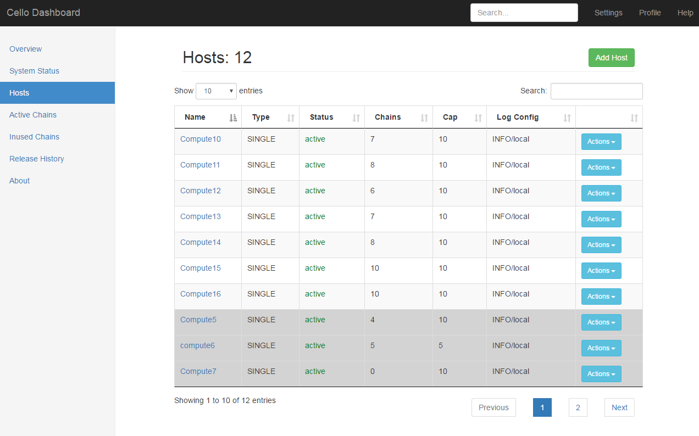

使用超级账本 Cello 搭建区块链服务¶
从前面的讲解中可以看到，区块链服务平台能够有效加速对区块链技术的应用，解决企业和开发者进行手动运营管理的负担。但是这些方案都是商业用途，并且只能在线使用。

超级账本的 Cello 项目为本地搭建区块链服务管理平台提供了开源的解决方案，可以实现在多种类型的物理资源上实现区块链网络的生命周期管理。
正如 Cello 的名字所蕴意，它就像一把精巧的大提琴，以区块链为琴弦，可以奏出更加动人的乐章。
基本架构和特性¶
Cello 项目由笔者领导的 IBM 技术团队于 2017 年 1 月贡献到超级账本社区，主要基于 Python 和 Javascript 语言编写。该项目的定位为区块链管理平台，支持部署、运行时管理和数据分析等功能，可以实现一套完整的 BaaS 系统的快速搭建。其基本架构如下图所示。
在实现区块链环境快速部署的同时，Cello 也提供了不少对区块链平台进行运行时管理的特性，这些特性总结如下。
- 管理区块链的全生命周期，包括创建、配置、使用、健康检查、删除等。
- 支持多种基础架构作为底层资源池，包括裸机、虚拟机、容器云（Docker、Swarm、Kubernetes）等。
- 支持多种区块链平台及自定义配置（目前以支持超级账本 Fabric 为主）。
- 支持监控和分析功能，实现对区块链网络和智能合约的运行状况分析。
- 提供可插拔的框架设计，包括区块链平台、资源调度、监控、驱动代理等都很容易引入第三方实现。
下面具体介绍如何以 Docker 主机为资源池，用 Cello 快速搭建一个区块链服务平台。
环境准备¶
Cello 采用了典型的主从（Master-Worker）架构。用户可以自行准备一个 Master 物理节点和若干个 Worker 节点。
其中，Master 节点负责管理（例如，创建和删除）Worker 节点中的区块链集群，其通过 8080 端口对外提供网页 Dashboard，通过 80 端口对外提供 RESTful API。Worker 节点负责提供区块链集群的物理资源，例如基于 Docker 主机或 Swarm 的方式启动多个集群，作为提供给用户可选的多个区块链网络环境。
下图中展示了一个典型的 Master-Worker 部署拓扑。每个节点默认为 Linux（如 Ubuntu 16.04）服务器或虚拟机。

为了支持区块链网络，Worker 和 Master 节点需要配备足够的物理资源。例如，如果希望在一个 Worker 节点上能够启动至少 10 个区块链集群，则建议节点配置至少为 8 CPU、16G 内存、100G 硬盘容量。
下载 Cello 源码¶
Cello 代码的官方仓库在社区的 gerrit 上，并实时同步到 Github 仓库中，读者可以从任一仓库中获取代码。例如通过如下命令从官方仓库下载 Cello 源码。
$ git clone http://gerrit.hyperledger.org/r/cello && cd cello
配置 Worker 节点¶
安装和配置 Docker 服务¶
首先安装 Docker，推荐使用 1.12 或者更新的版本。可通过如下命令快速安装 Docker。
$ curl -fsSL https://get.docker.com/ | sh
/lib/systemd/system/docker.service 文件如下。
[Service] DOCKER_OPTS="$DOCKER_OPTS -H tcp://0.0.0.0:2375 -H unix:///var/run/docker.sock --api-cors-header='*' --default-ulimit=nofile=8192:16384 --default-ulimit=nproc=8192:16384" EnvironmentFile=-/etc/default/docker ExecStart= ExecStart=/usr/bin/dockerd -H fd:// $DOCKER_OPTS
修改后，需要通过如下命令重启 Docker 服务。
$ sudo systemctl daemon-reload $ sudo systemctl restart docker.service
下载 Docker 镜像¶
对于超级账本 Fabric v1.0 集群所需的镜像，可以使用如下命令进行自动下载。
$ cd scripts/worker_node_setup && bash download_images.sh
防火墙配置¶
为了确保 Worker 上的容器可以正常访问，通过如下命令确保主机开启 IP 转发。
$ sysctl -w net.ipv4.ip_forward=1
同时检查主机的 iptables 设置，确保必要的端口被打开（如 2375、7050~10000 等）。
配置 Master 节点¶
下载 Docker 镜像¶
使用如下命令下载运行服务所必要的 Docker 镜像。
其中，python:3.5 镜像是运行 Cello 核心组件的基础镜像；mongo:3.2 提供了数据库服务；yeasy/nginx:latest 提供了 Nginx 转发功能；mongo-express:0.30 镜像是为了调试数据库，可以选择性安装。
$ docker pull python:3.5 \ && docker pull mongo:3.2 \ && docker pull yeasy/nginx:latest \ && docker pull mongo-express:0.30
安装 Cello 服务¶
首次运行时，可以通过如下命令对 Master 节点进行快速配置，包括安装 Docker 环境、创建本地数据库目录、安装依赖软件包等。
$ make setup
如果安装过程没有提示出现问题，则说明当前环境满足了运行条件。如果出现问题，可通过查看日志信息进行定位。
管理 Cello 服务¶
可以通过运行如下命令来快速启动 Cello 相关的组件服务（包括 dashboard、restserver、watchdog、mongo、nginx 等）。
$ make start
类似地，运行 make stop 或 make restart 可以停止或重启全部服务。
若希望重新部署某个特定服务（如 dashboard），可运行如下命令。
$ make redeploy service=dashboard
运行如下命令可以实时查看所有服务的日志信息。
$ make logs
若希望查看某个特定服务的日志，可运行如下命令进行过滤，如只查看 watchdog 组件的日志。
$ make log service=watchdog
使用 Cello 管理区块链¶
Cello 服务启动后，管理员可以通过 Cello 的 Dashboard 页面管理区块链。
默认情况下，可通过 Master 节点的 8080 端口访问 Dashboard。默认的登录用户名和密码为 admin:pass。
如图，Dashboard 有多个页面，各页面的功能如下。
| 页面 | 功能 |
|---|---|
| Overview | 展示系统整体状态 |
| System Status | 展示一些统计信息 |
| Hosts | 管理所有主机（Worker 节点） |
| Active Chains | 管理资源池中的所有链 |
| Inused Chains | 管理正在被用户占用的链 |
| Released History | 查看链的释放历史 |
Hosts 页面¶
在 Hosts 页面，管理员可以管理所有资源池中已存在的主机，或添加新主机。表格中会显示主机的类型、状态、正在运行的区块链数量、区块链数量上限等。所有设定为 non-schedulable (不会自动分配给用户）的主机会用灰色背景标识，如下图所示。

点击一个主机的 Action 下拉菜单，有如下选项可供操作该主机。
- Fillup：将主机运行的区块链数添加至上限。
- Clean：清理主机中所有未被用户占用的链。
- Config：更改主机配置，如名称和链数量上限。
- Reset：重置该主机，只有当该主机没有用户占用的链时可以使用。
- Delete：从资源池中删除该主机。
点击 Hosts 页面的 Add Host 按钮，可以向资源池中添加主机。需要设定该主机的名称、Daemon URL 地址（例如，Worker 节点的 docker daemon 监听地址和端口）、链数量上限、日志配置、是否启动区块链至数量上限、是否可向用户自动分配，如下图所示。

Active Chains 页面¶
Active Chains 页面会显示所有正在运行的链，包括链的名称、类型、状态、健康状况、规模、所属主机等信息。正在被用户占用的链会用灰色背景标识，如下图所示。

点击一条链的 Actions 下拉菜单，有如下选项可供操作该链。
- Start：如果这条链处于停止状态，则启动。
- Stop：停止运行中的链。
- Restart：重新启动这条链。
- Delete：删除这条链。
- Release：将占用的链释放，随后会被删除。
点击 Active Chains 页面的 Add Chain 按钮，可以向资源池中添加更多链（如果还有未被占满的主机），如下图所示。

基于 Cello 进行功能扩展¶
Cello 已经提供了完整的区块链管理功能，并提供了图形界面和 API。
用户可以通过向 Cello 的 Master 节点（默认为 80 端口）发送 RESTful API 来申请、释放区块链，或查看区块链相关信息，如其对外开放的接口，可供用户进行远程交互。RESTful API 的说明可在 Cello 的文档中查阅。
对于区块链服务提供者，可以利用这些 API 为用户呈现友好的区块链申请和操作界面，在 Cello 的基础之上构建和实现更多功能。